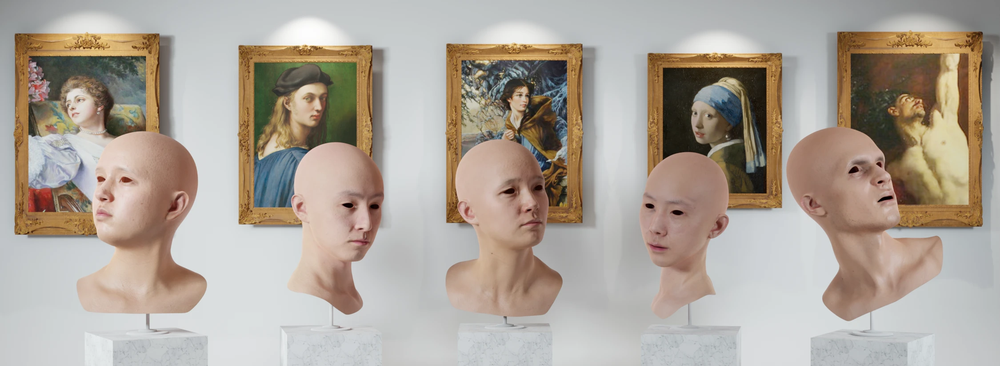

HACK: Learning a Parametric Head and Neck Model for High-fidelity Animation
Research overview
HACK models the head and neck together, connecting visible appearance and facial expression with the underlying cervical skeleton. Its training data combines ultrasound measurements with multi-view photometric capture. The learned representation separates shape, pose, expression, and larynx motion, giving artists anatomical controls for more expressive head-and-neck animation and motion transfer.
Summary · Read original ↗01 / 01
